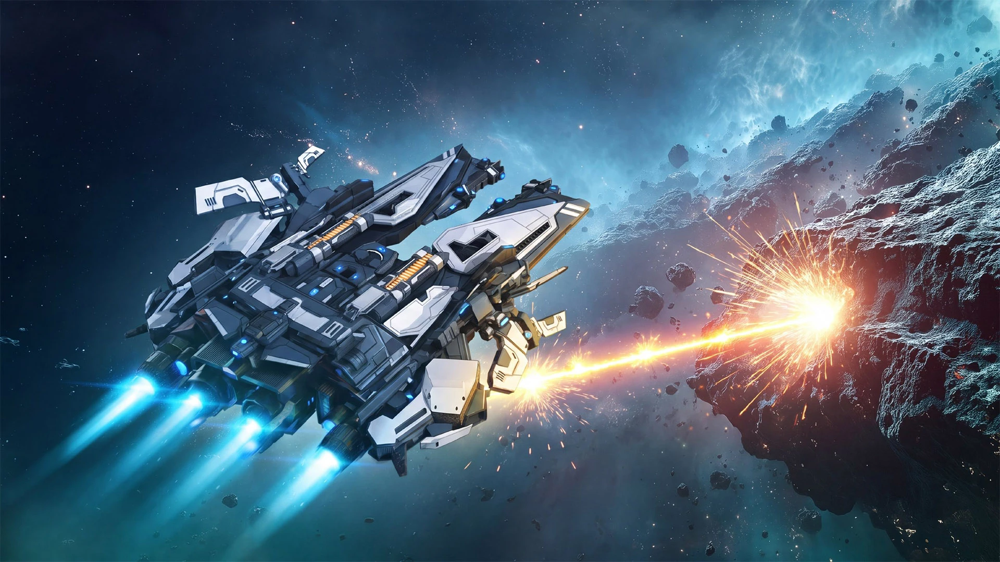
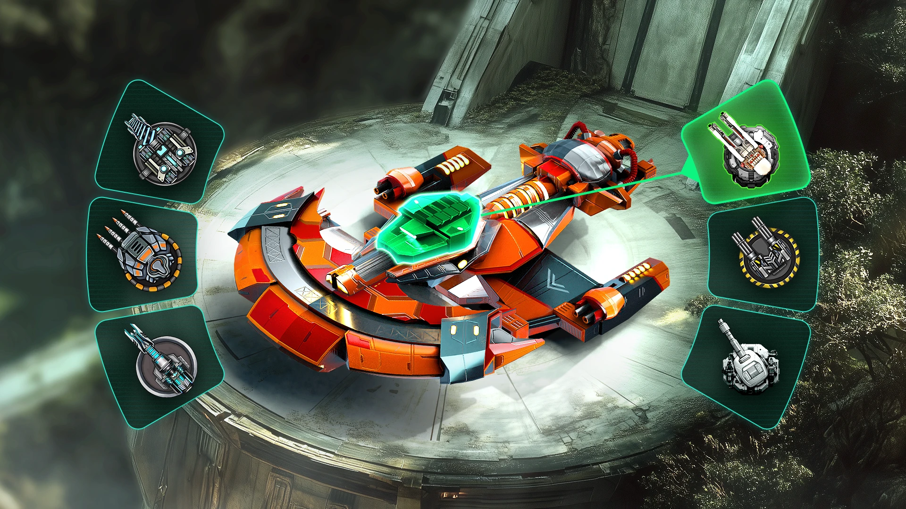
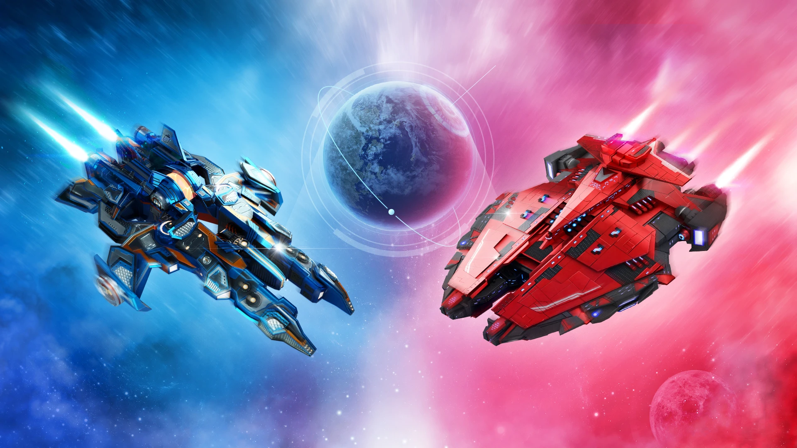

A / Cinematic Game Landing ↗
Масштаб, постановка и переход между двумя большими игровыми сценами.
По два полноценных экрана. Одни и те же обязательные сценарии, три разных композиционных подхода. Только реальные материалы проекта.

Масштаб, постановка и переход между двумя большими игровыми сценами.

Создание корабля через реальный корпус, модули и их связь с оснащением.

Редакционный разворот: типографика, крупный рендер и асимметричная композиция.
WebGL-билда пока нет. Play for Free открывает точку подключения игры внутри страницы, без редиректа и без фейкового боя. Текущий сайт не изменён.